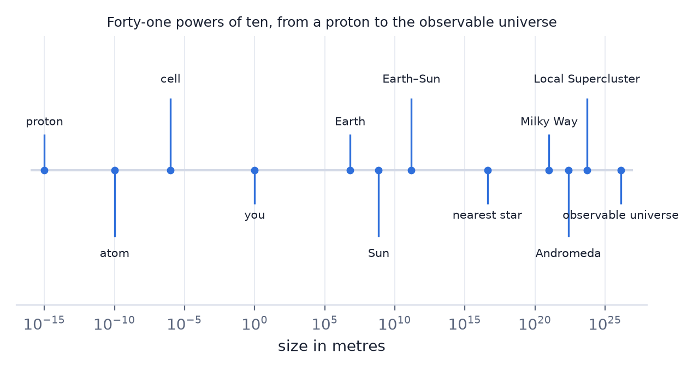
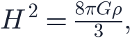
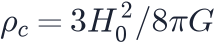

In this lesson you will learn
|
Why bother, when there is a calculator?
Because the calculator will happily tell you the universe is 13.8 million years old if you typed one wrong exponent, and only you can notice. Every working physicist keeps a rough answer in mind before computing, and compares. Most errors are caught that way, not by checking the algebra.

The skill has a name — an order-of-magnitude estimate, or a Fermi problem, after Enrico Fermi, who estimated the yield of the first atomic bomb by dropping scraps of paper as the blast wave passed and watching how far they blew.
The rule of the game You are not trying to be right. You are trying to be right to within a factor of a few — one power of ten at worst — using numbers you already know. That is almost always enough to tell a sensible answer from a nonsensical one. |
Powers of ten, by hand
Everything in cosmology is written as . Three rules cover almost all of it:
- Multiply: add the exponents. .
- Divide: subtract them. .
- Powers: multiply the exponent. .
The part that takes practice is the front number. Round it hard: ,
, , and a year is seconds — a
number worth knowing, because  is accurate to half a percent.
is accurate to half a percent.
Round in opposite directions If you round one factor up, round the next one down. Errors that cancel keep you inside your factor of a few; errors that pile up in the same direction do not. |
Worked example: how many stars can you see?
A dark sky shows stars down to magnitude 6. How many are there?
The brightest star is magnitude  ; each step of 1 magnitude is a factor 2.5 in
brightness, and fainter stars are much more numerous. Rather than the luminosity
function, use a fact you already have: about 20 stars are brighter than magnitude 1,
and the count roughly triples per magnitude. Five magnitudes further down is
, so over the whole sky, half of
which is below the horizon.
; each step of 1 magnitude is a factor 2.5 in
brightness, and fainter stars are much more numerous. Rather than the luminosity
function, use a fact you already have: about 20 stars are brighter than magnitude 1,
and the count roughly triples per magnitude. Five magnitudes further down is
, so over the whole sky, half of
which is below the horizon.
The answer is two to three thousand. The real number is about 2 500. A calculator was never involved.
Units are a free check
An equation whose units do not match is wrong, full stop — and checking costs seconds. If you half-remember the Friedmann equation as

check it: is m³ kg⁻¹ s⁻²,  is kg m⁻³, so the right-hand side is s⁻². And
is kg m⁻³, so the right-hand side is s⁻². And
 is a velocity over a distance, also s⁻¹, so
is a velocity over a distance, also s⁻¹, so  is s⁻². It matches, and you
can use the formula.
is s⁻². It matches, and you
can use the formula.
Units also reconstruct formulas. What could a black hole's radius be, built from
,  and
and  ? Only has units of length. The real Schwarzschild radius
is — the factor of 2 needs the actual theory, but the shape of the
answer needed nothing but bookkeeping.
? Only has units of length. The real Schwarzschild radius
is — the factor of 2 needs the actual theory, but the shape of the
answer needed nothing but bookkeeping.
The factor you cannot get Dimensional analysis gives you the scaling and never the dimensionless number in front. That number is almost always between 0.1 and 10, which is exactly why an order-of-magnitude estimate is allowed to ignore it. |
The numbers worth memorising
A small set carries most of cosmology. Learn these to one significant figure:
| Quantity | Value | Useful because |
|---|---|---|
| Speed of light |
m/s | everything |
| Year | s | converts ages to seconds |
| Parsec | m ≈ 3 light years | the distance unit |
| Hubble constant |
70 km/s/Mpc | expansion rate |
| Hubble time |
14 billion years | the age, near enough |
| Hubble distance |
4 300 Mpc | the size of the visible universe |
| Age of the universe | Gyr s | the clock |
| CMB temperature | 2.7 K | the thermal history |
| Critical density | kg/m³ | about 5 hydrogen atoms per m³ |
| Milky Way | stars, 30 kpc across | the local yardstick |
| Galaxies observable | a few | the census |
One number, two jobs Mpc and Gyr are the same fact in different clothes. Knowing that the Hubble time is close to the actual age — and why it needn't have been — is worth more than either number alone. |
Worked example: the density of the universe
The critical density is

. Estimate it without a calculator. km/s/Mpc .
km/s/Mpc .
Then , and . So
The accepted value is kg/m³. Divide by the mass of a hydrogen atom, kg, and the universe contains about five hydrogen atoms per cubic metre — emptier than the best vacuum ever made in a laboratory.
Try it: Cosmology Calculator Check yourself against the machine. Estimate the age of the universe as |
The three ways it goes wrong
- A missed exponent. By far the most common. Write every number as and track the exponents separately from the front numbers.
- A missing factor that is not of order one. Some numbers really are enormous — the ratio of electromagnetic to gravitational force between two protons is . Estimating is fine; assuming every unknown factor is 1 is not.
- Estimating an exponential. during inflation is not "a few". Where a quantity depends exponentially on something, small changes in that something change the answer by powers of ten, and rough is no longer good enough.
When an estimate is not enough Precision cosmology measures parameters to a percent, and the entire Hubble tension (L6.6) lives in a 9% disagreement. Order-of-magnitude thinking tells you whether a measurement is possible; it can never settle a question like that. Know which kind of question you are asking. |
Remember this
|